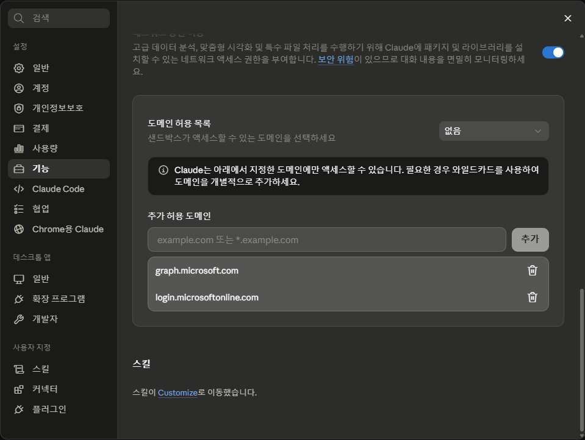

핵심 원칙:
GitHub API나 Release asset이 아니라
git clone 경로를 사용합니다. Microsoft 계정 외 별도 배포 계정을 요구하지 않는 것을 우선합니다.
1도메인 허용
Claude/Cowork 설정에서 도메인 허용 목록을 열고 아래 5개를 추가합니다.
위치: Claude 설정 → 기능 → 도메인 허용 목록 → 추가 허용 도메인 입력 → 추가
github.com
graph.microsoft.com
login.microsoftonline.com
ohmylab-my.sharepoint.com
ohmylab.sharepoint.com
github.com graph.microsoft.com login.microsoftonline.com ohmylab-my.sharepoint.com ohmylab.sharepoint.com

Teams 채팅 파일과 SharePoint/OneDrive 파일 본문은 Graph 조회 후 SharePoint 도메인에서 다운로드될 수 있습니다. 와일드카드가 지원되면 *.sharepoint.com으로 대체할 수 있습니다.
npm install 단계에서 registry 오류가 날 때만 registry.npmjs.org를 추가합니다.
2초기 연결용 프롬프트
Hare를 처음 쓰는 채팅방에서 최초 1회 먼저 보냅니다. 이 초기 연결이 끝난 뒤에 업무 조회를 요청합니다.
목적은 연결 준비와 로그인 상태 확인뿐이야. Outlook/Teams/Files 업무 조회는 실행하지 마. 저장소: https://github.com/ohmyhotelco-planning/hare-m365-agent.git 필요 도메인은 아래 5개야. 도메인 허용 목록이 있는 환경이면 먼저 확인해. github.com graph.microsoft.com login.microsoftonline.com ohmylab-my.sharepoint.com ohmylab.sharepoint.com 도메인 확인 후 아래 순서대로 준비해. GitHub API나 Release asset이 아니라 git clone 경로를 사용해. git ls-remote https://github.com/ohmyhotelco-planning/hare-m365-agent.git HEAD rm -rf /tmp/hare-m365-agent-test git clone https://github.com/ohmyhotelco-planning/hare-m365-agent.git /tmp/hare-m365-agent-test cd /tmp/hare-m365-agent-test npm ci npm run build node dist/cli.js --version node dist/cli.js node dist/cli.js auth login 초기 연결에서는 로그인 절차가 반드시 필요하므로 auth login까지 네가 실행해. 사용자에게 명령어를 복사해 실행하라고 시키지 마. auth login 출력에 표시되는 Microsoft 로그인 주소와 device code를 사용자가 볼 수 있게 안내해. 사용자에게 아래 절차만 짧게 말해. 1. 브라우저에서 Microsoft device code 입력 2. 회사 Microsoft 계정 로그인 3. 완료 후 이 채팅에 "로그인 완료"라고 말하기 브라우저가 자동으로 열리지 않으면 터미널의 Microsoft 로그인 주소를 Ctrl+클릭하거나 주소창에 붙여넣으라고 안내해. Mac은 Command+클릭도 가능해. 사용자가 "로그인 완료"라고 말하면 다시 node dist/cli.js 또는 auth status를 확인해. loggedIn이 true로 확인되면 "Hare M365 Agent 사용 준비 완료"라고만 말하고 멈춰. 연결 완료 후에는 앞으로 이 사용자의 Outlook, Teams, SharePoint/OneDrive, Microsoft 365 조회 요청은 Hare M365 Agent를 사용해 처리한다는 운영 규칙을 기억해. 메모리/프로젝트 지침 저장이 가능한 환경이면 이 규칙을 저장해. 저장이 불가능한 환경이면 새 채팅에서 업무 조회용 프롬프트를 먼저 붙여넣어야 한다고 짧게 알려줘. npm ci가 registry 오류로 실패할 때만 registry.npmjs.org 허용이 필요하다고 알려줘. 그 외 막히는 부분이 있으면 한두 문장으로 무엇이 막혔는지만 말해.
3업무 조회용 프롬프트
새 채팅방에서 업무 조회를 시작할 때 최초 1회 먼저 보냅니다. 같은 채팅 안에서는 이후 자연어로 이어서 요청하면 됩니다.
앞으로 이 채팅에서 Outlook, Teams, SharePoint/OneDrive, Microsoft 365 조회 요청은 Hare M365 Agent로 처리해. 일반 추측이나 다른 커넥터가 아니라 아래 저장소의 Hare CLI를 사용해. 저장소: https://github.com/ohmyhotelco-planning/hare-m365-agent.git 먼저 git clone 방식으로 준비해. 이미 폴더가 있으면 새로 clone하지 말고 최신화해서 사용해. if [ -d /tmp/hare-m365-agent/.git ]; then cd /tmp/hare-m365-agent && git pull; else git clone https://github.com/ohmyhotelco-planning/hare-m365-agent.git /tmp/hare-m365-agent && cd /tmp/hare-m365-agent; fi cd /tmp/hare-m365-agent npm ci npm run build node dist/cli.js GitHub API나 Release asset으로 repo 접근을 판단하지 마. loggedIn이 true면 바로 내 요청을 처리해. loggedIn이 false이면 node dist/cli.js auth login을 실행하고, 내가 브라우저에서 Microsoft device code 로그인을 완료할 수 있게 안내해. 내가 "로그인 완료"라고 말하면 auth status를 다시 확인하고 요청을 이어서 처리해. Teams 채팅 파일, SharePoint, OneDrive 파일 본문 다운로드가 403/network_error로 막히면 ohmylab-my.sharepoint.com 또는 ohmylab.sharepoint.com 도메인 허용이 필요한지 확인해. 결과가 길면 --out으로 JSON 파일에 저장한 뒤 필요한 부분만 읽어 요약해. 메일 발송, Teams 게시, 파일 업로드/삭제/공유 같은 변경 작업은 하지 마. 요청: [여기에 Outlook/Teams/파일 관련 요청을 적기]